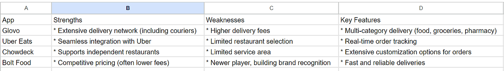
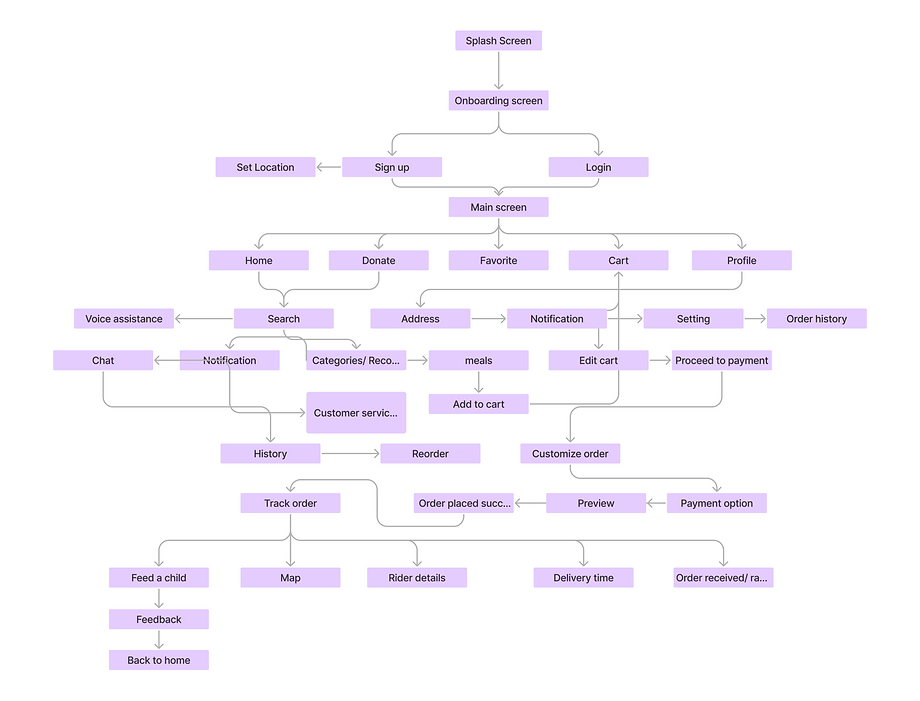
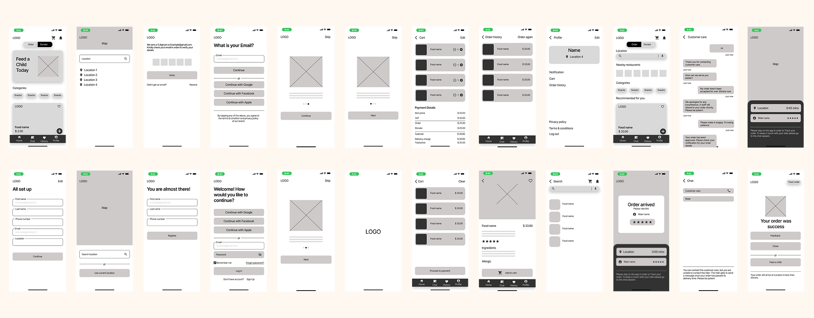
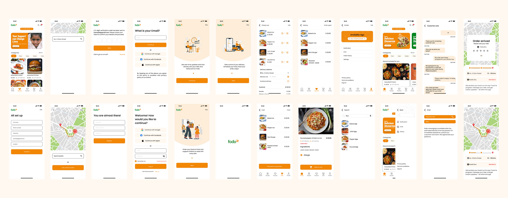

Duration
February 6 - February 27
Role
- UX Researcher
- UI Designer
Client
Project Overview
Fodo is a mobile application that helps to fight hunger in the society by enabling users to order their meals and as well order a meal as a lower price for charity.
The Challenge
Imagine this: You're like me, living in a bustling city like Lagos. We work hard, have dreams, but sometimes, seeing people struggle for food just hits different. There are tons of food delivery apps around, bringing delicious meals straight to your door. But here's the thing: these apps mostly help people who already have money. The real issue is that many Nigerians, especially in some areas, just can't afford enough food. It feels unfair, right? Technology is supposed to make things easier, but these apps seem to leave a whole bunch of people behind. So, the question became: how can we use this tech for good, to connect people with full plates to those with empty bellies?
The Solution
The struggle with food insecurity gnawed at me. Witnessing it daily in my community, I felt a responsibility to do something. Existing food delivery apps felt like a missed opportunity - a chance to connect those with resources to those in need, all through the convenience of technology. That's when the idea for this app sparked. I envisioned an app that wouldn't just deliver delicious meals, but also nourish the community in a more profound way.
The Goal
- Increase Access to Food for People Facing Food Insecurity
- Empower Users to Contribute to Their Communities
- Support Local Businesses and Reduce Food Waste
Design Process
- Discovery and research
- Defined the problem
- Ideate/brainstorm
- Design
- Wire-frame
Discovery/Research
While formal user research wasn't employed in this initial phase, to gain valuable insights, I conducted targeted user inquiry with a small group of friends strategically chosen for their relevant experiences. These individuals work with start-up charity organizations and frequently use online food delivery services. Our discussions explored their observations about how existing food delivery apps address food insecurity. This early user inquiry helped me understand the potential for a food delivery app that bridges the gap between convenience and social impact.
Competitive Analysis
After all being said and done, I was able to understand the problem that I was about to solve, the solution, and the features.
Information Architecture
Wireframe
Features
Takeaway